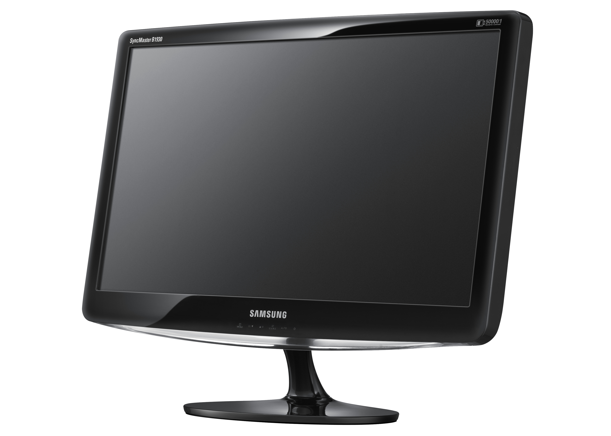
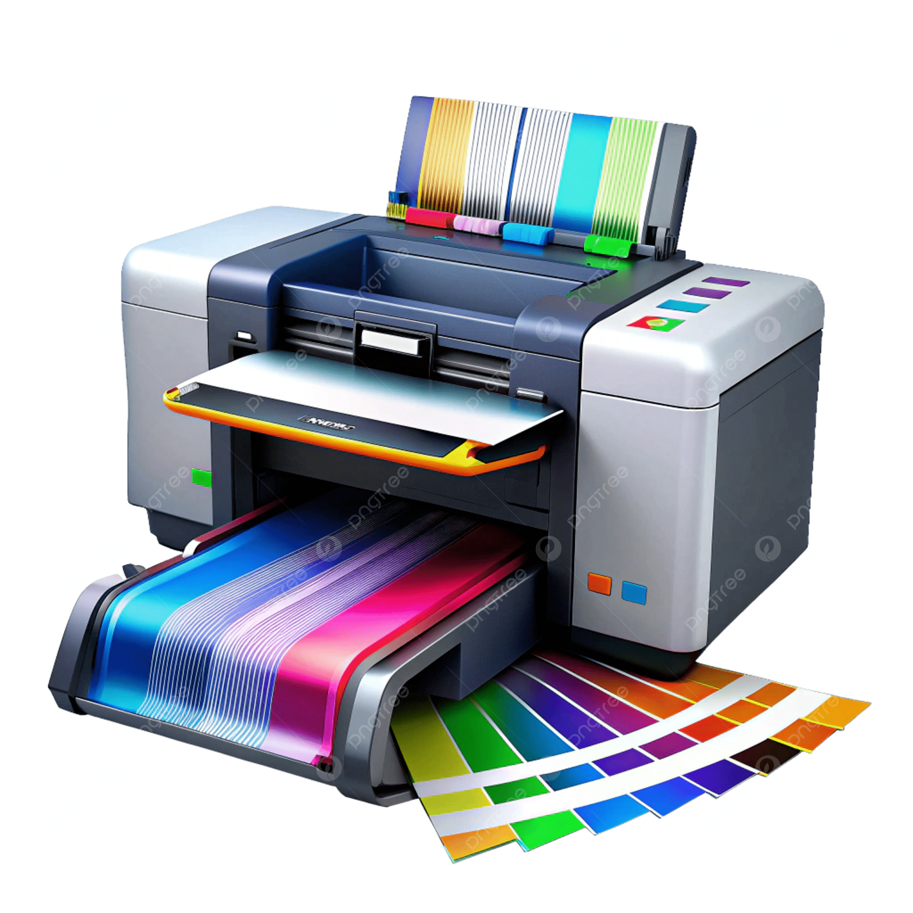
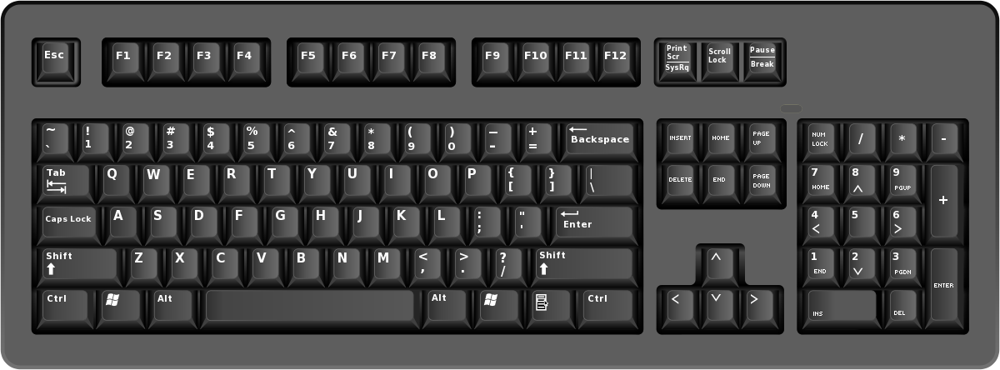
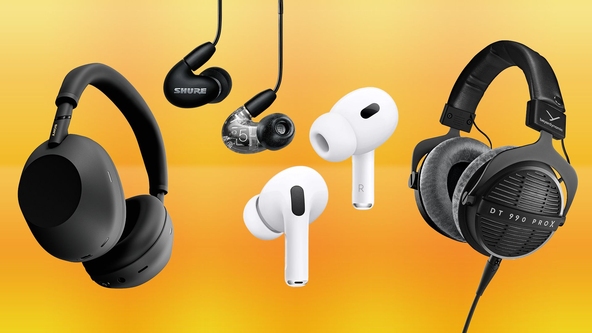
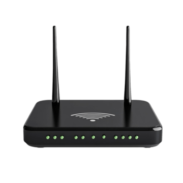
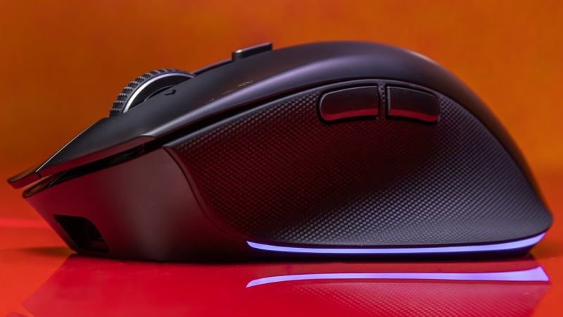

labtop
labtop waa qalabka ugu muhiimsan ee looisticmaalo coding, waxbrasho, cilmi-baris, iyo shaqooyonka maalinlaha ah

monitor
monotor-ku wuxuu soobandhigaa macluumaadka kumbiyiitarka, isagoobsiinaya muuqaalo cad oo shaqada lagu qabto

printer
printer-ku wuxuu kuuoglaanayaa inaad soo daabacdo,Document-yo, warbixino, iyo qoraalo muhiim ah

USB flash drive
USB flash drive-ku waxaa looisticmaalaa, keydinta iyo gudbinta xogta si guud

keyboard
keyboard-ku waxaa looisticmaalaa qorista qoraalada, amarada iyo code-yada barnaamijyada

headphones
headphones-ku waxaa looisticmaalaa, dhageysiga casharda, podcastiga, iyo shirarka online-ka ah

Router
Router-ku wuxuu bixiyaa isku-xirka internet-ka, wuxuuna isku-xirka qalabyo badan oo hal shabakad

Mouse
Mouse-ku wuxuu fududeeyaa xakameynta cursor-ka iyo isticmaalka barnaamijyada kumbiyiitarka